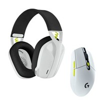
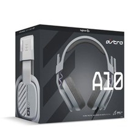
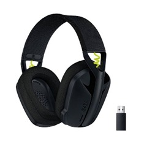
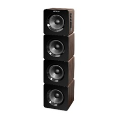
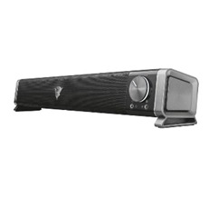
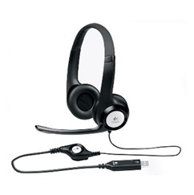
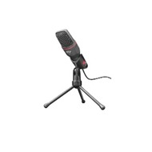
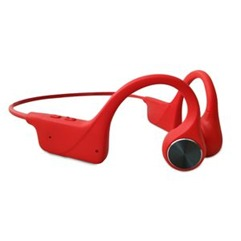

COMBO GAMING LOGITECH EDICIÓN ESPECIAL
$ 477.900Los auriculares con micrófono G435 para gaming se conectan a tu PC, tu móvil y otros dispositivos mediante tecnología inalámbrica LIGHTSPEED para gaming y Bluetooth. Ofrecen un sonido nítido y potente, y los micrófonos con formación de haces reducen el ruido de fondo. Están hechos con un mínimo de 22% de plástico reciclado posconsumo.

AUDÍFONOS DIADEMA GAMING ASTRO A10
$ 334.900Mejora tu equipo para juego diario con los audífonos con micrófono ASTRO A10 de segunda generación. Considéralos como la siguiente evolución del equipo que ya utilizas a diario. Audio formidable a través de transductores dinámicos de 32 mm, micrófono de varilla volteable para silenciar y construcción resistente con almohadillas de copas y de diadema reemplazables se combinan para ofrecer una experiencia sonora memorable. No hay que preocuparse por los sonidos oclusivos ni por comprar otros audífonos cuando las cosas empiezan a deteriorarse un poco. Métete de lleno en largas sesiones nocturnas con el diseño ergonómico de parte posterior cerrada de los A10, con una construcción robusta y una diadema muy confortable y resistente, que puede resultar incluso más duradera que tus antiguos audífonos favoritos. Ajusta el audio sin moverte de tu sitio, mediante el control de volumen integrado, para no perderte nunca ni un momento de la acción.

AUDÍFONOS DIADEMA GAMING LOGITECH G435
$ 326.900Para tus juegos individuales, para el juego con amigos, para música. Los audífonos con micrófono G435 para juegos se conectan a tu PC, tu celular y otros dispositivos mediante Bluetooth y tecnología inalámbrica LIGHTSPEED para juegos. Ofrecen un sonido nítido y potente, y los micrófonos con formación de haces reducen el ruido de fondo. Además están hechos con un mínimo de 22% de plástico reciclado posconsumo. Con los G435 la diversión es constante. Desde el diseño a la producción y la entrega, utilizamos plástico reciclado siempre que fue posible, creamos empacado responsable y logramos la certificación CarbonNeutral® para los G435.

parlante-victrola-torre-estereo-con-bluetooth-giratorio
$168.900DESCRIPCIÓN FICHA TÉCNICA Descripción del producto Estéreo de torre Bluetooth giratorio de 32" Victrola con sonido de 40 vatios, tiene un diseño único con una rotación de altavoz de 90 grados para un excelente efecto de sonido envolvente en cualquier habitación, grande o pequeña. Equipado con un potente sonido de 40 W de 4 altavoces giratorios y la capacidad de transmitir música de forma inalámbrica desde su dispositivo con Bluetooth, a una distancia de hasta 10 metros

PARLANTE TRUST GXT 618 ASTO BARRA DE SONIDO
$ 112.900Elegante altavoz horizontal para juegos, diseñado para encajar perfectamente bajo cualquier monitor de PC o pantalla de TV

AUDÍFONOS LOGITECH USB H390 CONTROL AUDIO INTEGRADO
$115.900Tus oídos nunca se cansaran de la comodidad acolchonada y de la calidad de sonido digital de estos audífonos de alta calidad efectos para disfrutar de llamadas de voz y de video claras, música, películas y juegos,

MICROFONO TRUST GXT 212 MICO 3.5 MM-USB CONTRIPODE REF 23791 NEGRO-ROJO
$ 86.900Con conexiones de 3,5 mm y USB, funciona con cualquier PC u ordenador portátil, Cable con clavija de 3,5 mm; adaptador USB incluido en el precio para conseguir un audio digital de alta calidad, sin distorsiones, Ideal para usar con Twitch, Youtube, etc.: conéctelo y empiece a utilizarlo, Incluye trípode con ángulo ajustable, Cable de 1,80 m.

AUDÍFONOS DE CONDUCCIÓN ÓSEA WATTANA W-BH-X6 ROJO
$ 102.900'Audífono de conducción ósea con canal auditivo despejado, es ideal para ciclismo, trote, conducción, gimnasio por su diseño de oído abierto puedes escuchar lo que pasa en tu entorno, además cuida tu tímpano ya que no es invasivo y se mantiene limpio.
✕

NIKE MODEL 1
Descripción Modelo 1
$ 130